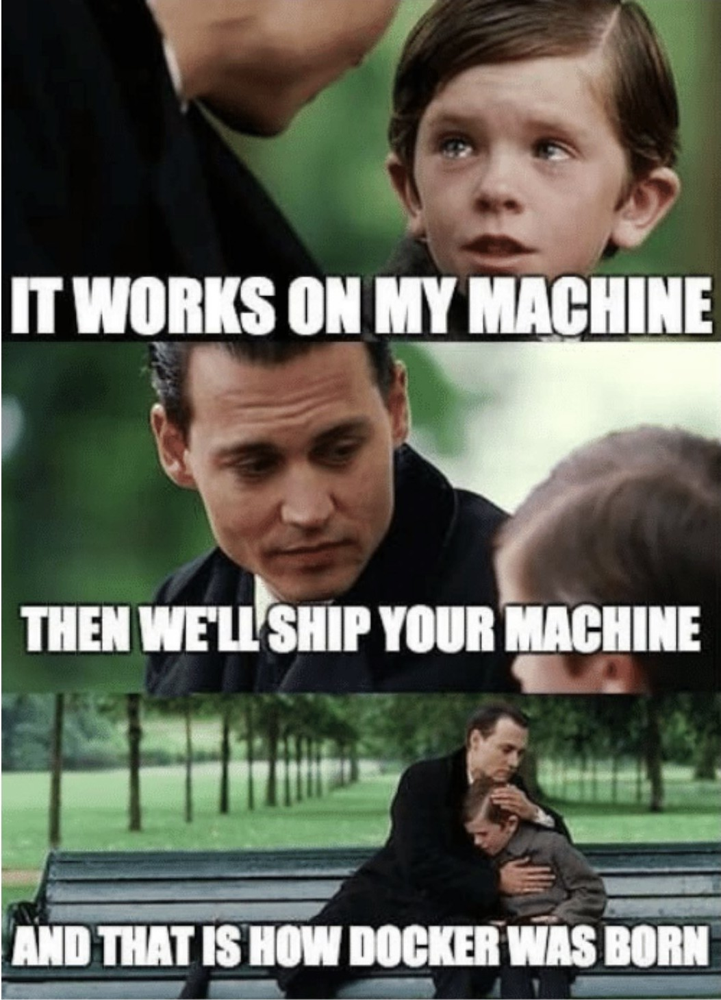
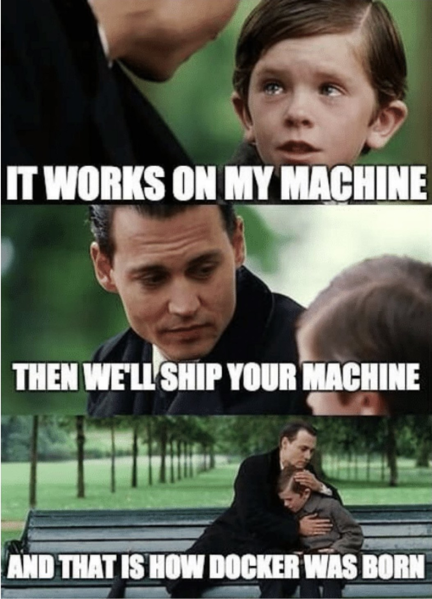

Containerization: Basics and CI
Laboratory of Software Systems
Danilo Pianini — danilo.pianini@unibo.it
Compiled on: 2022-10-27 — printable version
Bare metal vs. VMs vs. Containers
Runtime isolation without operating system replication
Why containers?
 

Lightweight virtual machines?

Closer to confined processes

Docker
Docker is a containerization platform
Standard de-facto in industry
Base concepts
- Image
- a read-only template with instructions for creating a Docker container
- images can get built upon other images
- images are made of a stack of layers
- Container
- a runnable instance of an image
- namely, a “writable layer” atop an image
- Service
- A software component in charge of running one or multiple containers
Docker architecture
- Registry: repository of images
- Daemon: service pulling images from registries and instancing containers
- Client: interface towards the daemon

Running docker containers
- Install docker
- Add your user to the
dockergroup - Enable the docker service (on most Linux distributions
systemctl start docker) - Pull an image:
docker pull adoptopenjdk - Run a container!
docker run adoptopenjdk
Every container provides a default command, running without options runs such default in a non-interactive terminal.
Running in interactive mode can be achieved with the -i option
Running a custom command can be achieved with writing the command after the image name
- e.g.,
docker run -i adoptopenjdk bash - parameters for the custom command can follow
- use the
toption to run in a pseudo-tty - use the
--rmto remove the container after use
Interaction with the outside world
A docker container runs in isolation.
Environment variables, network ports, and file system folders are not shared.
Sharing must be explicit and requires options to be specified
- Passing environment variables:
-e <name>=<value> - Mounting volumes:
-v <host>:<guest>:<options><host>is the path on the host system<guest>is the location where it will be mounted on the guest<options>can be optionally specified as mount options (e.g.,rw,ro)
- Publishing ports:
-p <host>:<guest><host>is the port on the host system<guest>is the corresponding port on the container
Managing images
Every image has a unique ID, and may have an associated tag
The subcommand images lists the pulled images and their associated information
The subcommand image allows for running maintenance tasks, e.g.
docker image ls– same asdocker imagesdocker image prune– removes unused imagesdocker image rm– removes images by namedocker image tag– associates a tag to an image
Creating docker images
Docker images are written in a Dockerfile
Every command inside a Dockerfile generates a new layer
The final stack of layers creates the final image
The docker build command interprets the Dockerfile commands to produce a sequence of layers
Changes to a layer do not invalidate previous layers
Dockerfile syntax
# Pulls an image from docker hub with this name. Alternatively, "scratch" can be used for an empty container
FROM manjarolinux/base
# Runs a command
RUN pacman -Sy --noconfirm gnupg archlinux-keyring manjaro-keyring
# Copies a file from the local folder into the image
COPY makepkg.conf /etc/makepkg.conf
# Adds a new environment variable
ENV GEM_HOME=/rubygems/bin
# Configures the default command to execute
CMD bash
Naming images
Image naming is done via tags
The easiest way to do so is assigning tags at build time with the -t options of docker build
The option can be repeated multiple times to make multiple tags
docker build -t "myImage:latest" -t "myImage:0.1.0"
latest is usually used to identify the most recent version of some image
Publishing docker images
Images get published in registries
The most famous, free for publicly available images, is Docker Hub
By default, Docker uses Docker Hub as registry (both for pull and push operations)
Docker Hub requires registration and CLI login:
docker login docker.io
Once done, publication is performed via push:
docker push <image name>
Building docker images in CI
Of course, as any other software, custom docker images should get built in CI
Several integrators use containers as build environments: it is possible to build a container using a container
More in general, there is no inherent limit to nesting containers